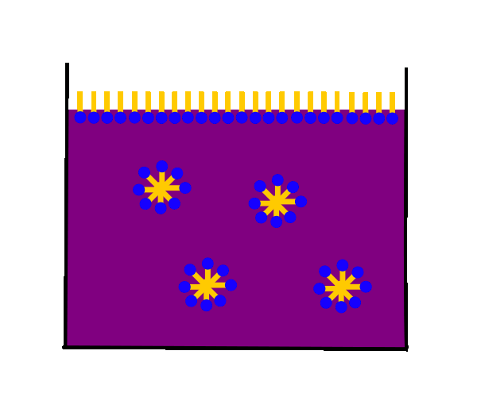
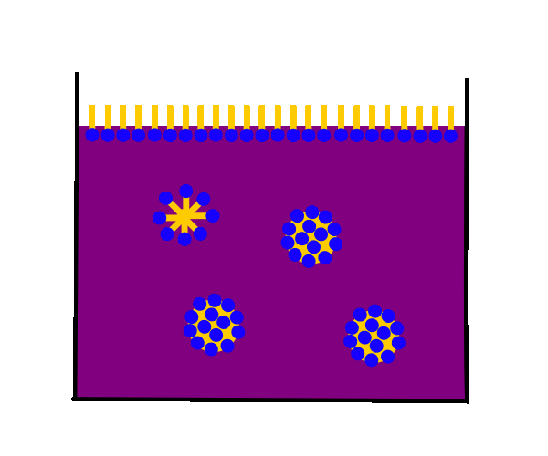
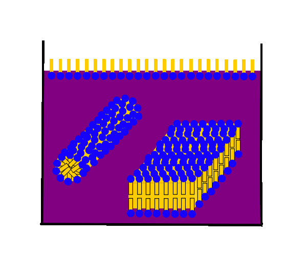

Gibt man viel Tensid in Wasser, so wird nicht nur die Grenzfläche
Wasser/Luft mit Tensidmolekülen besetzt, sondern es bilden sich auch
kleine Tensidmolekül Zusammenlagerungen, sogenannte Micellen.
Triebkraft ist der Versuch, die Kontaktfläche zwischen allen
polaren Moleküloberflächen zu maximieren, die zwischen polaren und
unpolaren jedoch zu minimieren.
Als Folge davon wenden sich die unpolaren Schwanzgruppen entweder
einer umgebenden lipophilen Phase zu oder aber sie bilden eine
eigene lipophile Phase.

Eine häufig auftretende Micellenform sind kleine Kügelchen,
bei denen die hydrophilen Kopfgruppen nach außen der wässrigen Phase
zugewandt sind, die lipophilen Schwanzgruppen eine eigene kleine
lipophile Phase bilden.

Bei noch höheren Tensid-Konzentrationen kann es zur Bildung
Stab förmiger oder sogar flächig gestapelter (= lamellarer)
Micellen kommen.
Eine Sonderform einer geschlossenen lamellaren Micelle stellen
Zellmembranen dar.